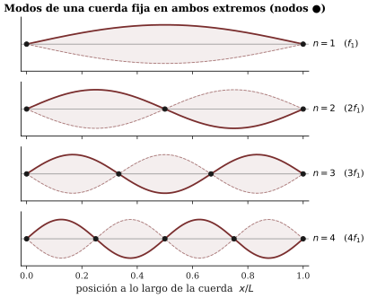

Capítulo 3 — Modos de vibración: por qué cada objeto suena como suena
Lectura previa a la sesión 03. Objetivos: OA1.1, OA1.2, OA5.1 (intro).
Una deuda pendiente con un vaso
Usted dejó una predicción escrita al salir de la sesión pasada: si golpeo un vaso y miro el espectrograma, ¿veré una línea o varias? No la cambie ahora — la gracia de una predicción es contrastarla —, pero permítase esta lectura como preparación del juicio: la sesión 3 empieza golpeando ese vaso de verdad, con la app mirando.
Mientras tanto, hay una pregunta anterior que casi nunca nos hacemos, de puro obvia que parece: ¿por qué cada cosa suena como ella misma? Usted reconoce a ojos cerrados una copa, una puerta, una moneda en el suelo, la olla contra el lavaplatos. Nadie le enseñó ese catálogo; su oído lo construyó solo. Para que eso sea posible, cada objeto tiene que llevar consigo algo así como una firma sonora estable — algo que no cambia aunque cambie el golpe. Este capítulo es sobre esa firma: de dónde sale, por qué es fija, y por qué la de una cuerda de guitarra es musicalmente especial mientras que la de una sartén no lo es.
El experimento mental de las masas y los resortes
Empecemos por el objeto vibrante más simple que la física conoce: una masa colgando de un resorte. Tírela hacia abajo y suéltela: oscila, sube y baja, siempre al mismo ritmo. Si la estira más, oscila con más amplitud — pero al mismo ritmo. Ese ritmo propio, que no depende de cómo la empujó sino de cuánta masa tiene y qué tan duro es el resorte, es su frecuencia característica. Una masa, un resorte: una sola frecuencia. Un objeto así, si sonara, daría una sola línea en el espectrograma.
Ahora conecte dos masas en cadena, con resortes entre ellas. Juegue mentalmente (o con elásticos y tuercas, que es mejor): descubrirá que hay exactamente dos maneras “limpias” de hacerlas oscilar. En una, las dos masas van y vienen juntas, como un solo cuerpo. En la otra, van en oposición: cuando una sube, la otra baja. Y aquí está el dato decisivo: cada una de esas dos coreografías tiene su propio ritmo — la de oposición es más rápida, porque los resortes trabajan más. Dos masas: dos formas de vibrar, dos frecuencias características. Con tres masas salen tres; con diez, diez (Benade 1990, cap. 6, construye esta escalera completa sin una sola ecuación, y es la mejor lectura complementaria de este capítulo).
Cada una de esas coreografías tiene nombre técnico: modo de vibración. Y el salto final del argumento es corto: una cuerda, el parche de un tambor, el fondo de una sartén son — para la física — cadenas de muchísimas masas diminutas unidas elásticamente. Por eso un objeto real no tiene una frecuencia característica sino una familia entera de ellas: su repertorio de modos. Esa familia es la firma sonora que su oído cataloga. Depende de la forma, el material, el tamaño y las sujeciones del objeto — y de nada más. El golpe no puede inventarle frecuencias nuevas a un objeto; a lo sumo decide cuáles modos del repertorio despiertan con más energía, según dónde y cómo golpea.
Guarde esta frase, que es el corazón del capítulo y casi del curso: cada línea del espectro es un modo del objeto sonando. El espectrograma que usted aprendió a leer la semana pasada es, ni más ni menos, el catálogo de modos del objeto, con cada uno apagándose a su propio ritmo.
Dos detalles de la coreografía: nodos y decaimiento
De las coreografías de las masas conviene retener dos rasgos que la sesión va a explotar.
Primero: en un modo, el objeto vibra entero, pero no parejo. Hay lugares que se mueven mucho y lugares que no se mueven nada — los nodos. En la cadena de dos masas en oposición, el punto medio del resorte central queda quieto; en una cuerda vibrando hay puntos quietos perfectamente ubicados. Pregunta para llevar a la sesión (y no es retórica: la va a responder con una tapa de olla en la mano): si un modo tiene un lugar quieto y usted apoya ahí un dedo, ¿ese modo se apaga o sobrevive? ¿Y si apoya el dedo donde ese modo se mueve al máximo? Piense qué haría el dedo con la energía del movimiento. La respuesta convierte un dedo en una herramienta de edición de espectros.

Segundo: los modos no mueren juntos. Cada uno pierde su energía a su propio ritmo, así que la mezcla cambia mientras el sonido se apaga — el timbre de un golpe es una película, no una foto (Benade 1990, cap. 4: toda la entrada del libro al problema es la especulación sobre una sartén golpeada, que en la sesión será literalmente nuestro laboratorio). Cuando mire el espectrograma del vaso, no mire solo cuántas líneas: mire cuáles duran.
La cuerda: el objeto que gana la lotería
Si cada objeto tiene su familia de frecuencias, la pregunta musical es inmediata: ¿hay familias mejores que otras? La respuesta del oído es un sí rotundo, y el objeto favorito lleva milenios identificado: la cuerda tensa.
Los modos de una cuerda sujeta en ambos extremos son fáciles de dibujar: una sola barriga que sube y baja; dos barrigas alternadas con un punto quieto al medio; tres barrigas con dos puntos quietos; y así. Lo extraordinario no son las formas sino las frecuencias: la de dos barrigas resulta ser exactamente el doble de la fundamental; la de tres, exactamente el triple:
f_n = n \, f_1 \qquad n = 1, 2, 3, \dots

Números enteros. La cuerda es el objeto cuya familia de frecuencias cae en razones perfectas 1 : 2 : 3 : 4… — y el oído humano, por razones que la sesión 5 va a desmenuzar, premia esa regularidad fundiendo todos esos componentes en una sola nota nítida y afinable. En la sesión va a ver y oír cada modo por separado, y su suma, en una demo interactiva; y va a oír en una guitarra real cómo un dedo apoyado suavemente en el punto exacto deja sonar unos modos y silencia otros (los “armónicos naturales” que los guitarristas y violinistas usan desde siempre).
Aquí nace una distinción de vocabulario que el curso declara obligatoria de aquí al final, porque ordena todo lo que suena:
- Parcial: cualquier componente del espectro de un sonido, cualquier línea, venga de donde venga.
- Armónico: un parcial que está en razón entera con la fundamental.
Todos los armónicos son parciales; no todos los parciales son armónicos. ¿En qué objetos los parciales son armónicos y en cuáles no? Ya tiene los elementos para sospecharlo — y la sesión lo medirá, app en mano, con objetos de cocina. No le arruinamos el resultado; solo una advertencia: los números que salgan de la sartén le van a importar más que los de la cuerda.
Cuando el objeto es una superficie
Una cuerda vibra a lo largo de una sola dimensión. Pero un parche de timbal, un platillo o el fondo de la sartén son superficies: vibran en dos dimensiones a la vez. Sus modos existen igual — formas fijas de vibrar, cada una con su frecuencia — pero la geometría se enriquece: los puntos quietos se convierten en líneas nodales, curvas y diámetros enteros que no se mueven, dividiendo la superficie en zonas que suben y bajan alternadamente. Hay una manera clásica y hermosa de verlas: espolvorear arena sobre una placa vibrando — la arena huye de las zonas que se agitan y se acumula dibujando las líneas quietas. Las llamadas figuras de Chladni asombraron a Napoleón hace dos siglos y todavía se usan para diagnosticar placas de violín (C&G, cap. 10; verá imágenes en la sesión).
¿Y las frecuencias de esos modos 2D? ¿Caerán también en razones enteras, como la cuerda? Esa es exactamente la pregunta que separa a la percusión del resto de la orquesta, y la dejamos abierta para la sesión — con un solo dato para intrigar: el timbal, que es una membrana como el tom, logra sin embargo una altura tan clara que se le escriben notas en la partitura. Algo hicieron los timbaleros y sus constructores con los modos del parche. Qué, exactamente, es de lo mejor que la acústica musical tiene para contar (Benade 1990, cap. 9; ROS cap. 13).
En esta sesión, además, empieza el proyecto
La sesión 3 tiene un segundo acontecimiento: se lanza el proyecto del curso — en su grupo estable, van a construir o modificar un instrumento musical o una instalación sonora, y a explicar acústicamente lo que resulte. La pauta completa se entrega y discute en la sesión (hitos, fechas y porcentajes incluidos), pero hay una regla que conviene conocer desde ya porque define el espíritu del encargo: la calidad de la explicación vale más que el éxito sonoro. Un instrumento que suena “mal” pero cuyo grupo entiende y demuestra por qué suena así vale más que uno afinado por casualidad.
Venga con el oído ya puesto: este capítulo le acaba de dar el primer lente de diseñador. Todo objeto sonoro es un repertorio de modos; construir un instrumento es decidir qué familia de frecuencias tendrá y cómo se van a encender. Piense en objetos, materiales, cuerdas, tubos, membranas — traiga dos ideas, aunque sean vagas: la sesión reserva tiempo para la primera lluvia de ideas del grupo.
Preguntas que la sesión va a responder
- El vaso golpeado, ¿una línea o varias? ¿Y quién decide esas frecuencias: el golpe o el vaso?
- Los parciales de una sartén, ¿guardan razones enteras como los de la cuerda? ¿Qué números dan las razones f_2/f_1 y f_3/f_1 de los objetos de su kit?
- Si apoya un dedo en el centro de una tapa que suena, ¿se apaga todo el sonido, o solo una parte? ¿Cuál parte, y por qué?
- ¿A qué intervalo musical suena el segundo modo de una cuerda respecto del primero? ¿Y el tercero?
- ¿Cómo consigue el timbal una altura cantable si las membranas son, de nacimiento, inarmónicas?
Referencias del capítulo
- Benade (1990), cap. 4 (secs. 4.1–4.8 y EEQ 4.9) — la sartén golpeada: frecuencias características y decaimiento; cap. 6 (secs. 6.1–6.5) — modos construidos desde cadenas de masas, sin cálculo; cap. 9 (secs. 9.1–9.5) — barras, placas, membranas y el timbal.
- Campbell & Greated (1987), cap. 5 (pp. 183–202) — ondas y modos en cuerdas; cap. 10 (pp. 409–452) — percusión, membranas y figuras de Chladni.
- Roederer (1997), cap. 4, sec. 4.1 (pp. 120 y ss.) — ondas estacionarias en la cuerda; en español.
- Rossing, Moore & Wheeler (2002), caps. 2 y 4 — sistemas vibrantes y modos, con ejercicios; cap. 13 — percusión (la especialidad de Rossing).